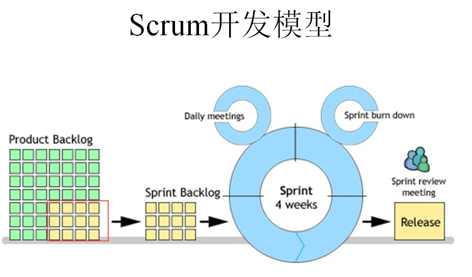
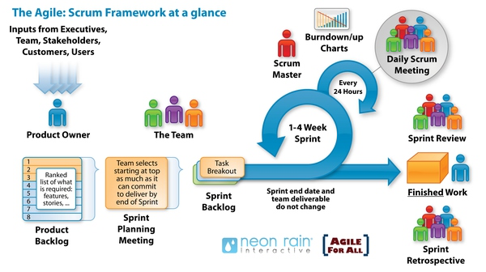

product Backlog
构建项目需求库
负责人：Product Owner
Sprint Backlog
确定每个任务的人员和耗时
负责人：Scrum Master
Sprint
Sprint开发过程
负责人：Scrum Master and Development Team
Sprint Planning Meeting
以一个Story为依据，为当前的Sprint划分需求和开发周期
Sprint Review Meeting
演示评审会议
Daily Scrum Meeting
每日站立会议
主持人：Scrum Master
Sprint burn down
Sprint 燃尽图
执行人：Development Team
Sprint Retrospective Meeting
回顾会议
又称总结会议，以轮流发言方式进行，每个人都要发言，总结并讨论改进的地方，放入下一轮Sprint的产品需求中；

每次会议控制在15分钟左右，每个人都必须发言，并且要向所有成员当面汇报你昨天完成了什么，并且向所有成员承诺你今天要完成什么，同时遇到不能解决的问题也可以提出，每个人回答完成后，要走到黑板前更新自己的 Sprint burn down（Sprint燃尽图）
可以使用Todo list进行任务记录，根据情况为任务设置几种状态，常见的状态为Todo，Doing，Done
来从中挑选出一个Story作为本次迭代完成的目标，这个目标的时间周期是1~4个星期，然后把这个Story进行细化，形成一个Sprint Backlog
每一个Scrum Team的成员都要向他们演示自己完成的软件产品


Product Owner（产品负责人）：
主要负责确定产品的功能和达到要求的标准，指定软件的发布日期和交付的内容，同时有权力接受或拒绝开发团队的工作成果。
Scrum Master（流程管理员）：
主要负责整个Scrum流程在项目中的顺利实施和进行，以及清除挡在客户和开发工作之间的沟通障碍，使得客户可以直接驱动开发。
Development Team（开发团队）：
主要负责软件产品在Scrum规定流程下进行开发工作，人数控制在5~10人左右，每个成员可能负责不同的技术方面，但要求每成员必须要有很强的自我管理能力，同时具有一定的表达能力；成员可以采用任何工作方式，只要能达到Sprint的目标。

Stakeholder（利益相关者）：
该角色与产品之间有直接的利益关系，通常也是由客户或最终用户代表组成。他们负责收集编写产品需求，审查项目成果等。

Scrum的核心思路
Scrum的核心思路，是首先承认我们的客户（或者我们的产品服务的用户）并不清楚自己的需求，并且人类的需求会不断变化（“requirements churn”：就是需求本身在不断地倒腾），所以我们默认需求是变化的需求，并且制定出一套策略能让整个组按照小功能快速开发，并且后续不断迭代。回归 Scrum 的英文含义：把开发就搞成一堆人在合力拼抢，把功能分成小块，快速开发和迭代。
Scrum
来自英式橄榄球运动，本质含义就是一群人你推我搡地去抢球和控球。用球赛来类比确实是一个形象又合适的比喻，在赛场上尽管队员们努力按照既定计划推进，但是场上瞬息万变，不可能实时按照教练或者队长的指令亦步亦趋的去行事，只能靠平时训练中形成的素养见机行事，达成目标。
依旧传统的管理方式
敏捷开发告诉我们快速实验和收集用户反馈的重要性，但是它却没有改变传统的中央集权式的管理方式。即使使用敏捷开发，没有实权且对全局信息了解甚少的工程师仍然有可能花费大量的时间去开发并无市场的产品，从而导致用户的不满，工程师的消极，以及管理层的失望。
「创业技术之道」谈谈敏捷开发和Scrum
Scrum开发方法
Scrum概述
Scrum角色
Scrum模型

满足条件
理解思想
对Scrum的核心思想和理念真正深入的了解，而不是看中Scrum其管理流程的实现，需要结合敏捷方法的理论，从本质上了解为何Scrum要如此管理开发流程。
适配模型
熟悉Scrum提出的模型，遵循其规范的流程，但又不能被条条框框限定死，需要相关人员结合公司或者团队本身情况进行适当的调整，只要符合核心思想即可。这需要有一定智慧，知识和经验的人去了解公司业务，人员素质，再思考总结，才能制定出一套规范的开发流程，并将这套流程严格执行，这个过程甚至可能会改变公司架构。
人员素质
团队人员的素质是一个非常重要的，决定Scrum能否有效实施的条件，它包括技术能力，知识积累，做事原则，思想智慧等，是一个综合素质的考量。
有效协定
协定统一沟通的沟通方式，提高沟通效率。协定统一的版本控制方式，代码管理方式。引入统一的协助工具帮助流程流畅的执行和提高处理的效率。必要时可引入其他敏捷开发方法，相互配合使用。
Scrum虽然十分热门，但是要成功，正确的实现它，并达到一定的效果，不是简简单单的一个命令就可以做到。特别是国内的一些传统企业，或者一些组织架构死板的公司，内部改造并不容易。当然也不是扁平化管理的初创公司就能很好的实现Scrum，人员素质，管理者经验的都是初创公司的限制。所以个人总结了要实现Scrum先要满足的几大条件。


参考资料